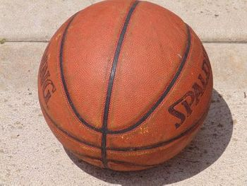
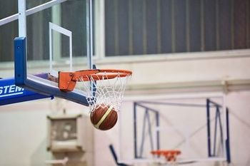
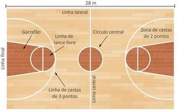
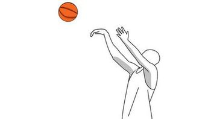

O basquete é um esporte de bola jogado em quadra, onde ambas as equipes, oficialmente, possuem 5 jogadores que devem trabalhar juntos para pontuar e defender o seu aro.

Bola de basquete

Cesta/aro de basquete

Quadra de basquete e suas marcas
Movimentos
Para jogar os times podem se utilizar de técnicas, dentre elas as principais são:
Arremesso:
O jogador arremassa a bola em direção do aro.
Passe:
O jogador joga a bola para um parceiro de time.
Bandeja:
O jogador segura a bola e avança, com no máximo 2 passos, em direção à cesta.
Drible:
O jogador empurra a bola contra o chão com as mãos para movimentar-se com ela em jogo.
Rebote:
Os jogadores disputam a bola depois de uma tentativa falha de cesta.

Arremesso
Pontuação
Os pontos são contados a partir de "cestas", que podem variar entre 1, 2 ou até 3 pontos dependendo da situação. Os pontos são determinados por:
(Um ponto) quando a cesta vem do lance livre, feito em caso de falta (cobrança de penalidade);
(Dois pontos) quando a cesta é feita enquanto o jogador está dentro da linha de três pontos;
(Três pontos) quando a cesta é feita enquanto o jogador está fora da linha de três pontos. OBS: Se o jogador pular, o que conta é a posição do ultimo pé a sair do chão.
Faltas
Os tipos de falta do basquete são:
Faltas pessoas: quando há contato ilegal/agressivo entre os atletas;
Faltas técnicas: quando o jogador se comporta de maneira a atrapalhar a partida, sem haver contato físico entre atletas;
Faltas antidesportivas: quando ocorre contato fora dos padrões do jogo;
Faltas desqualificantes: quando há qualquer ato de violência intencional entre dois ou mais atletas, como em casos de briga.
Cada jogador possui um limite de 5 faltas pessoais por partida, se ultrapassar esse número o jogador é desclassificado. Assim como o jogador, cada equipe possui um máximo de 5 faltas por quarto de jogo, onde a partir da quinta falta a equipe adversária pode fazer 2 lances livres.